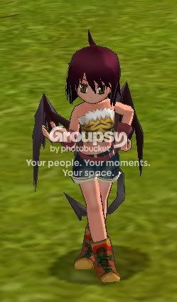
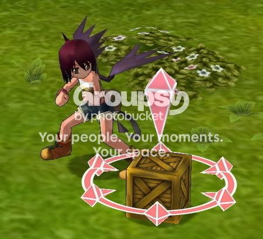
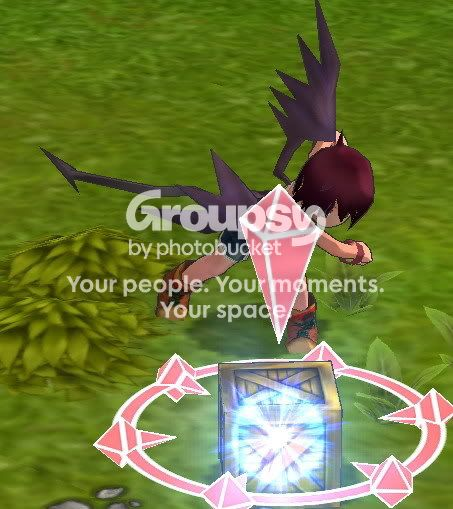
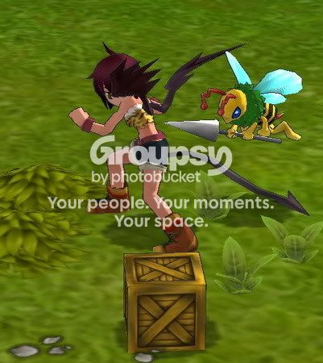
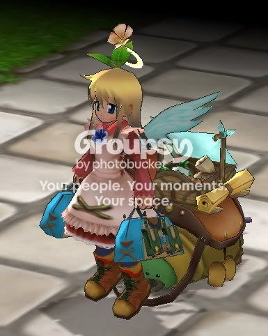
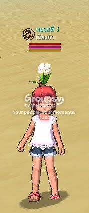
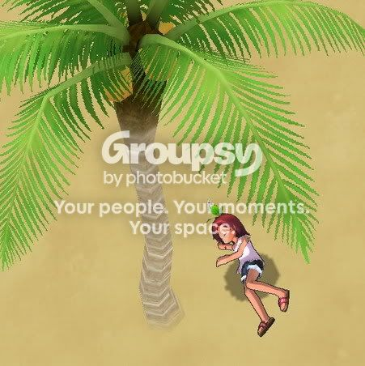

ลงรูปตัวละครเล่นๆเน้อ ^ ^....(จะถ่วงเวลาเพราะตัดเส้นยังไมเสร็จก็บอกเขาไปเถอะย่ะ- -*)
เริ่มจากตัวเลเวลน้อยสุดเลยละกัน

มารอนจัง~ อาชีพ Box1 Hunter!(อาชีพอะไรน่ะ!? ว่าแต่ได้ข่าวว่าเป็นเสก๊าไม่ใช่เรอะ!?)

เน้นๆว่ากล่องหนึ่ง เพราะกล่องอื่นไม่เคยล่า....=w=...
ชีวิตปรำวันของคุณเธอก็จะวนเวียนอยู่กับการ...
ตีกล่อง...

ตีกล่อง...

และ....ตีกล่อง...

เนื่องจากเป็นตัวเวลน้อยที่ยังเปิดกล่องฟรีได้อยู่ เหอๆๆ....(นี่กะใจจะไม่ให้เงินมันรั่วไหลไปถึงNPCเลยรึไง)
ชุดลายเสือนี่ก็เปิดจากกล่องหนึ่งเอาล่ะค่ะ ไปเทมที่เปิดได้ก็มีตั้งแต่ขยะ ไปจนถึงดาบเซอร์บิรัสแฟง เวลสี่สิบ....(ราคาขายเท่าไหร่ช่วยบอกกันด้วยนะคะ)

ตัวที่สอง มินาคิคุ~ อาชีพPet carrier (มั่วแล้ว ชาวนาตะหาก..)


ดูแลสัตว์/ฝึกสัตว์/ทำอาหารสัตว์.....เป็นงานหลัก หาของเควส/ขยอาหาร เป็นงานรอง....สรุปคือทำงานหนักุดในทั้งสามตัว...
ไม่เคยตั้งใจจะไปเวลเลยซักครั้งเดียว= =....ที่ผ่านมาเวลอัพมาได้เพราะแต้มเควสทั้งหมด...

ตอนนี้สถิตย์อยู่แถวโรงเรียนสัตว์เลี้ยงตะวันออก บ่มตัวฝึกหนอนซิ่ง...ใครเจอทักกันได้เน้อ=w=”...
สัตว์เลี้ยงที่นิยมติดก็หนอนแบก...

นี่ตอนที่ยังเวลไม่ถึงสามสิบ ประมาณยี่สิบกว่าๆมั้ง ใส่กระโปรงดูเป็นสาวหวาน เดินลัลล้าเก็บของ...(นั่นชุดเวล15ไม่ใช่เรอะ..? )

ตัวสุดท้าย เวลเยอะสุด เนียงก้า เดอะ Quest point sucker! (ทิ้งอาชีพเดิมไปเรียบร้อย ผ่านมาสอนอาทิตย์ไม่ได้แตะคทาเล้ย...)
[img][img]http://i44.photobucket.com/albums/f17/crazydevilcat/Untitled-Scanned-02.jpg[/img]

ตัวดูดแต้มเควสดีๆนั่นเอง...
ชุดแบบเต็มยศ นานๆทีจะได้ใส่...แต่ไม่ได้ใส่มาระยะนึงแล้ว....
กิจวัตรประจำวัน...ส่วนมากจะเป็นการ นั่งๆนอนๆอยู่ในอัพทาวน์ ไม่ก็ไปเที่ยวเกาะไทนี่เล่น ถ่ายรูปลัลล้า~


วันๆไม่ทำอะไรกัน อาศัยของเควสที่มินาคิคุหามา ส่งประทังชีวิต....
(ยิ่งบรรยายภาพรวมยิ่งเสื่อมลงทุกที...พอเถอะ= =lll)
ปล. อัพเลวนี่นา...- -*....
ปล.2 เน็ตหมดค่ะ ใช้เน็ตโรงเรียน(เลวอีกแล้ว...)
ปล.3 หัวริงคะ! ถ้าเกิดมาเห็นกระทู้นี้ก็ขอแจงไว้ตรงนี้เลยนะคะ ออนไม่ได้ค่าTT[]TT~ อยาเพิ่งงอนจนถีบเราออกจากริงนะคะ แง~~!!! หัวริงง่า เน็ตเราหมดดด~!!!